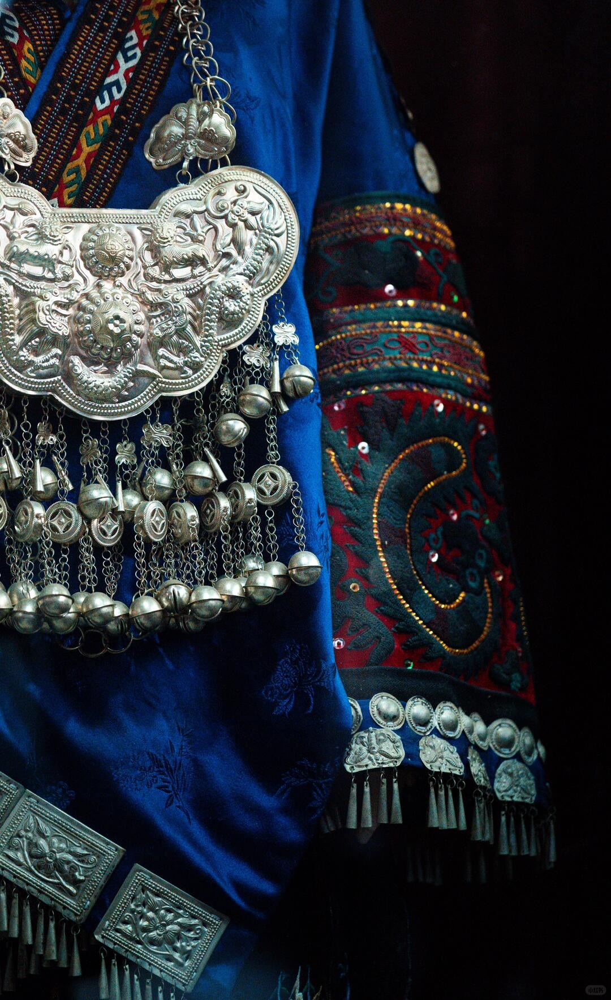
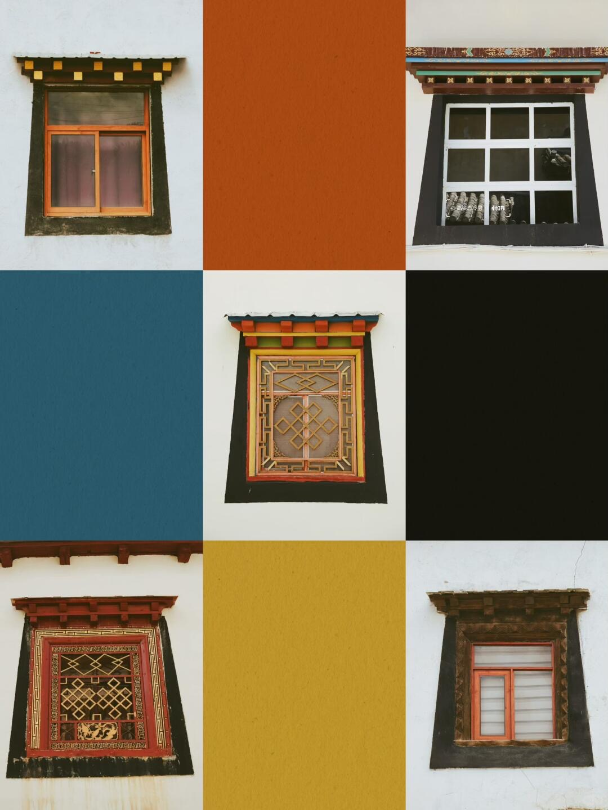
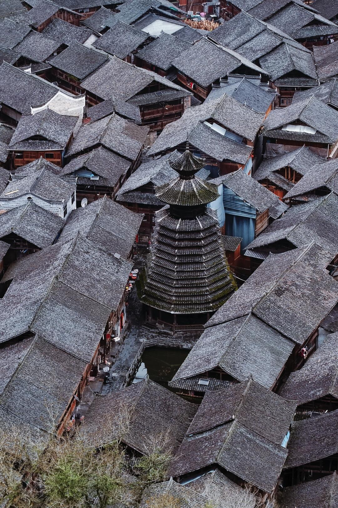
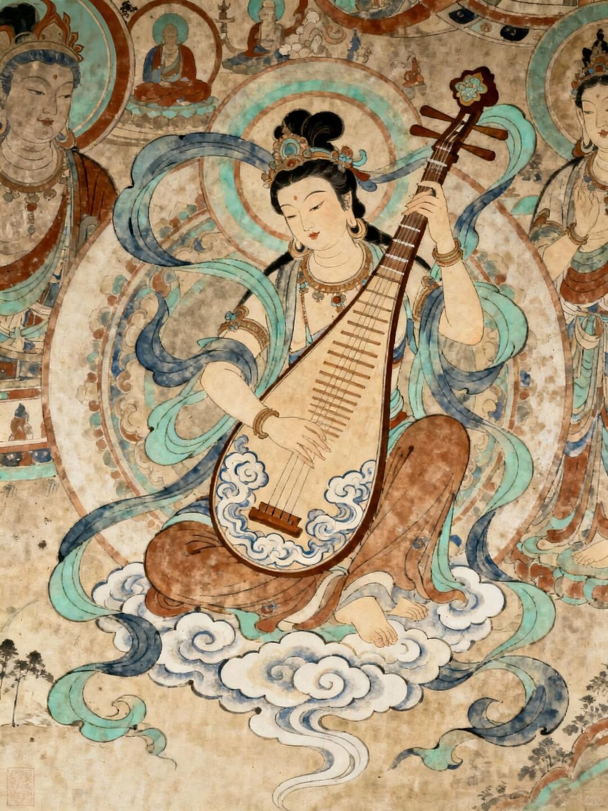
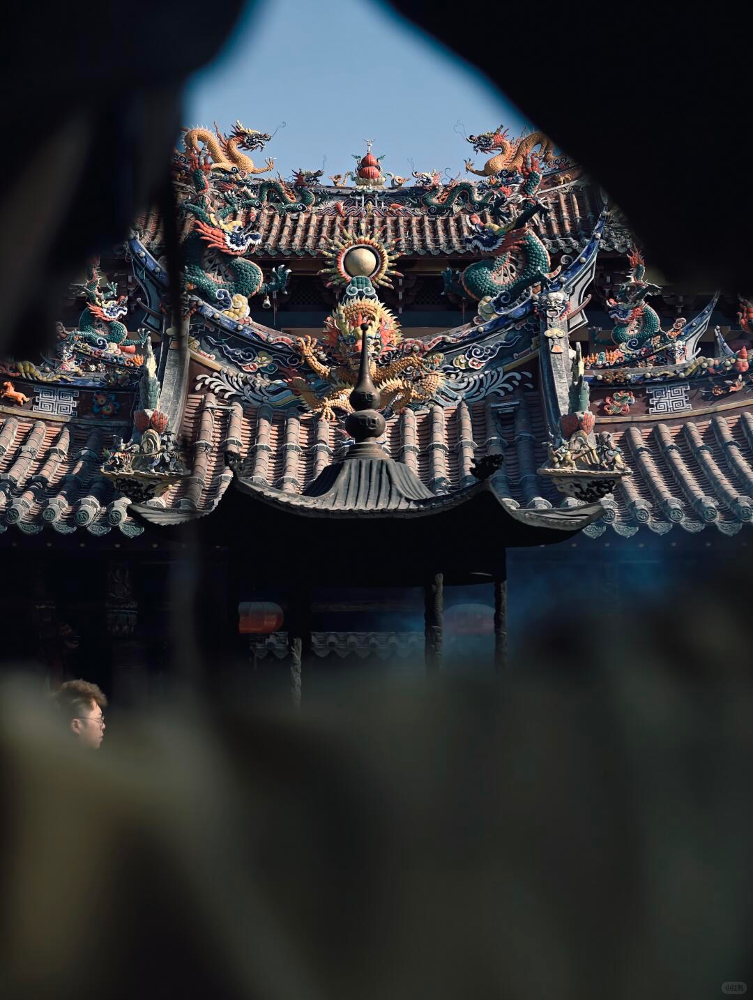
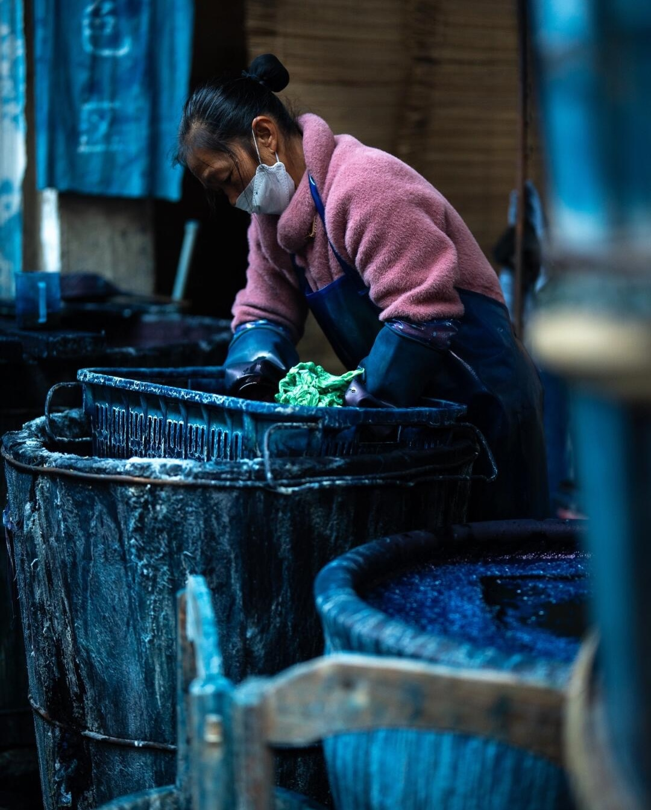

Replace with
images/culture/miao-silver.jpg
images/culture/miao-silver.jpg
Silver as Ancestral Light
银饰不仅被佩戴在身体之上，也记录家族、 迁徙与祝福。行走时发出的声响，使衣饰成为一种 能够被听见的身份记忆。
Culture
我们追踪图案、器物、仪式与地方如何保存共同记忆， 也观察传统如何穿过时间，在今天重新成为一种可被看见、 触摸与讲述的生活形式。
Regional Visual Language
按地域与民族进入视觉传统：服饰、建筑、纹样、 材料与色彩并非装饰性的表面，而是一个群体理解自然、 身份与时间的方式。

银饰不仅被佩戴在身体之上，也记录家族、 迁徙与祝福。行走时发出的声响，使衣饰成为一种 能够被听见的身份记忆。

红、白、蓝、黄并不是孤立的色彩选择。 它们与天空、土地、信仰和建筑共同构成高原生活的 视觉秩序。

榫卯将木材连接成鼓楼、风雨桥与居所。 建筑的稳定来自部件之间彼此承托的关系， 如同村落本身的共同体结构。
Photography Atlas
以摄影与文字记录文化发生的现场。 村落、古城、寺院、市场和遗址不只是风景， 也保存着人的路径、劳动与日常秩序。

洞窟壁画在沙漠边缘保存了跨文明流动的痕迹。 颜料、衣纹与神祇形象，共同构成一部被绘制在 岩壁上的交流史。

寺庙、宗祠、清真寺与街市在同一座港口城市中 并存。海上贸易留下的不只有货物，还有信仰与 生活方式的层叠。
门窗、庭院、铜器与集市共同组织老城的节奏。 这里的空间不是静态遗产，而是仍被使用、协商 与更新的生活容器。
水系穿过白墙黑瓦之间，将生活、消防、风水与 景观连接起来。村落像一台缓慢运转的身体， 水是其中不可见的脉络。
茶马古道上的集市将马帮、寺庙、戏台与村落 连接起来。空间保留了交换发生的痕迹，也保存着 人们相遇和停留的方式。
Long-form Narratives
通过长篇叙事进入神话、民俗与工艺传承。 这里关注的不只是“过去发生了什么”， 更是故事如何在口述、手艺与仪式中继续改变今天。

一块蓝染布从植物、泥土与水中诞生，也在反复浸染、 氧化与晾晒之间积累时间。颜色并不是被一次性覆盖 上去，而是在手的劳动中逐渐显现。
Read Story →从女娲补天的神话出发，理解“修补”如何成为 面对灾难、秩序与重生的一种文化想象。
→ 02火把节中的火焰既照亮公共空间，也短暂重组 人与人之间的关系，让节日成为共同体的现场。
→ 03竹编的形式来自材料本身的弹性与限制。 每一次交错都微不足道，却在重复中生长出稳定 而复杂的结构。
→ 04皮影戏借助一层幕布，将雕刻、音乐、口述与光线 组合成流动的戏剧，也让古老故事持续获得新的身体。
→